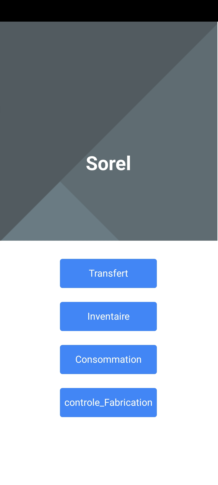
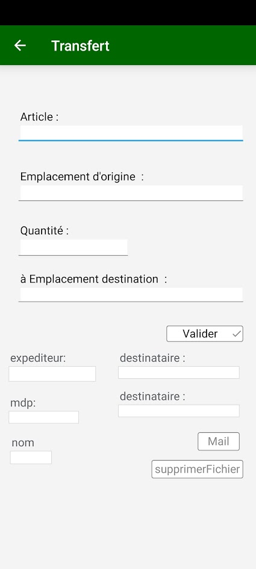
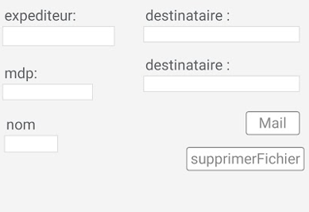

Scanne code Barre et envoie de l'inventaire par mail
Fait par Adlen Souci
Pour les entreprises SOREL / BEREL
Objectif
Le projet consiste à scanner un code-barres, récupérer les données de celui-ci afin de les
enregistrer dans un champ de saisie. Les données vont alors être intégrées à un fichier txt puis
envoyées par mail. Cela permet de faire l'inventaire et d'envoyer le compte rendu directement par
mail.
Cela s'apparente à de l'automatisation dans le domaine de l'informatique, pour envoyer par exemple les devis et factures en un clic sans avoir à faire un
courrier physique, mais également d'aller sur les messagerie : gmail, outlook, etc..., selectionner
les destinataires et envoyer.
Cette demande est effectuée par une entreprise du nom de SOREL Fabricant spécialisé dans la réalisation de pièces en plastique injecté, afin de pouvoir gérer l'inventaire des stocks plus rapidement. L'application est fonctionnelle, mais elle évolue selon les demandes du client.
L'application
Nom de l'application
My_Project_Sorel.exe
Installation de l’application
Avec l'installateur d'application windev
prochainement telechargable sur playstore et serveur cloud
proposer par
windev.
Menu principale

Sur la page d'acceuil il y a plusieurs fenêtres :
Avec :
- Transfert
- Inventaire
- Consommation
- Controle_Fabrication

l'appareil utiliser et un appareil mobile smartphone zebra qui a donc un scanner code barre integrer.
Une fois le code barre scanner les champs de la fenetre vont être rempli grace au code barre
Les champs sont :
- Article
- Emplacement d'origine
- Quantité
- à Emplacement destination
Creation du fichier contenant les informations
Avec le bouton "Valider"
Envoie du Document par mail
Il faut entrer les informations suivantes :
- Expediteur : une adresse mail
- mdp : mot de passe d'application ou mot de passe fournie sur outlook(le mot de passe peut
être
configurer
directement dans l'application ou dans un fichier.ici)
- destinataires : adresse de destinataire
- nom : nom de l'expediteur

Le bouton mail permet donc d'envoyer le mail.